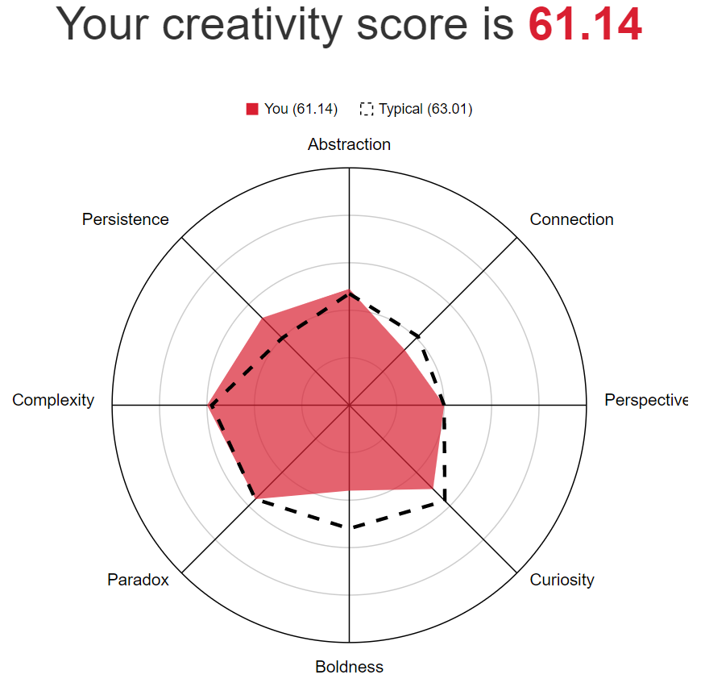
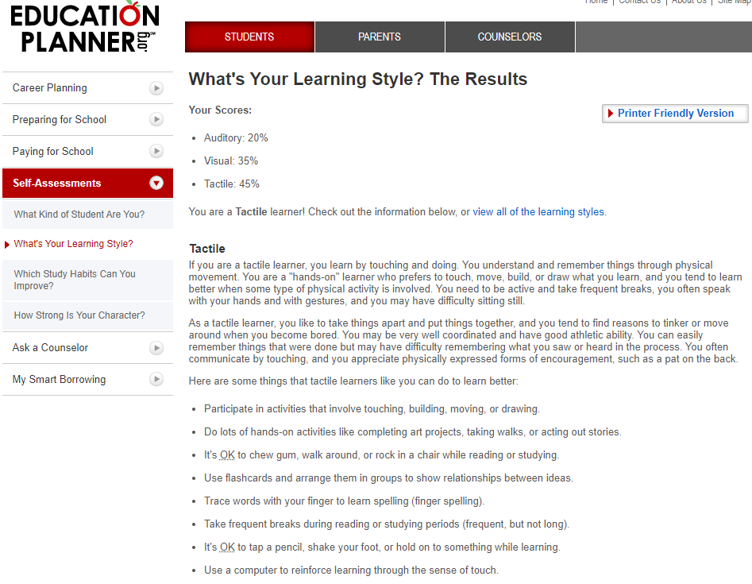
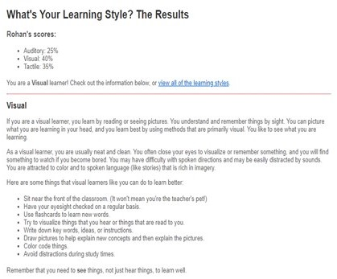
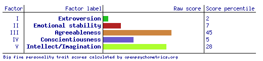

IT Technologies
Blockchain and cryptocurrencies
What are blockchains and cryptocurrencies?
What are blockchains and cryptocurrencies?In simple terms, cryptocurrencies are a decentralised digital or virtual currency that is based on a large network distributed across several computers. The most popular or widely known cryptocurrencies are bitcoin and Ethereum. However, there are more than 5000 different types of cryptocurrencies. Cryptocurrencies run on blockchain, allowing them to be immune to counterfeiting and are heavily protected by strong and complex algorithms. Blockchain can be simplified as a publicly open collection of records. Due to crypto’s being decentralised, this allows them to exist outside of the control of governments or authorities. What does it do?Like regular fiat currency, cryptocurrencies can be used to purchase goods and services. However, it is much more difficult as some are more popular than others, with each ranging from different fees or gas prices. Currently, bitcoin has a bad reputation since it is widely known for being used for criminal activity, especially on the dark web. This is because transactions are impossible to track, making them ideal for online payments. As aforementioned, there are thousands of cryptocurrencies, with all having different use cases, technological advancements, and goals. For instance, as of now, bitcoin is primarily a store of value (digital gold) coin, whereas something like Cardano (ADA) is a proof of stake coin, allowing users to delegate their stored ADA to a stake pool to earn rewards (passive income). In the near future, cryptocurrencies such as Cardano may be widely adopted. Cardano’s alliance with Africa aims to transform the entire continent into a single digital market. This will allow new industries to bloom and create many opportunities within the African economy. Another example of what cryptocurrencies can achieve in the future is Vechain. Vechain’s primary goal is to improve supply chain management. Its goal is to streamline business processes and information flow for complex supply chains through the use of a distributed ledger. Vechain utilises an internet-of-things token layer to allow tracking of assets on the blockchain, alongside this, a smart contract layer to track who owns the asset. Many companies such as BMW, Renault, Yida and many more, have partnered with Vechain and as of now, when manufacturing occurs worldwide and not centrally, tracking products is of great importance. Vechain allows for the tracking and authentication of assets or products, eliminating counterfeiting or fraud. Thus far, Vechain is in the works of being implemented in the health and food industry. An example would be the Mediterranean Hospital of Cyprus storing the first 100 COVID-19 vaccine records on the Vechain public blockchain. What is it likely to impact?Cryptocurrencies will slowly be adopted. This is already happening with big companies such as Microsoft, Dell and Tesla, which are now accepting cryptocurrencies as a form of payment. The increasing adoption of cryptos could lead to a new line of professions. With the growing technology, there will be a need for more crypto related jobs, such as blockchain builders, programmers, or even smart contract developers. The technology industry will definitely be impacted positively with the adoption of cryptocurrencies. Blockchain technology and crypto’s such as Vechain will offer tech companies cheaper and faster ways to transfer funds, execute agreements through smart contract and track assets throughout production. All this can be achieved without the need of a middleman such as banks or other financial institutions. One major impact cryptocurrency have is the reduced risk of fraud. In terms of money, there is always a risk for fraud, whether it be counterfeiting cash, fund transfer or even using a credit or debit card on an insecure site. Cryptos rectifies this issue since they are not associated to a government or banks and are transferred electronically and securely on the blockchain. Another impact cryptocurrencies have on the world is that they offer a stable alternative to unstable fiat currencies. Not all countries are subject to outrageous rates of inflation but some countries such as North Korea and Indonesia have extremely volatile currencies. If cryptocurrencies were to be accepted worldwide, it will provide a more stable, decentralised currency whilst also providing certainty for those living in economically volatile countries. How will this affect you?The adoption of cryptocurrency is inevitable. As of now, many large banks are collaborating with existing crypto clients or developing their own cryptocurrencies. Alongside that, many large corporations such as Tesla are invested and accepting cryptocurrencies as a form of payment. In 2021, Elon Musk announced that Tesla had invested USD$1.5 billion into bitcoin. As a result of these large organisations and banks investing in cryptocurrencies, many more people are starting to invest in crypto. Cryptocurrencies can affect me personally in many ways. In the grand view of things, cryptos can create new job opportunities. There will be a need for blockchain creators, programmers, marketing teams, and more. However, investing in cryptocurrencies would also be a beneficial, yet risky method of increasing my wealth. Reference List
|
Team Member 2 - Kevin Lam
Student ID: s3840027
Student Email: s3840027@student.rmit.edu.au
| My name is Kevin, and I am currently 19 years old studying Bachelor of Information Technology at RMIT. I was born in Melbourne Australia and have lived here ever since. I grew up in the Keilor Downs area. When I was younger, I loved playing sports such as basketball and soccer. Granted I was not very good at them, but I still enjoyed the sport/culture. I chose to study this course because there are many different pathways I can take. I am also interested in programming, robotics and anything technology related. In high school, I studied all the computer related courses such as robotics and information technology. I was always drawn to computers, whether it be me as a kid tinkering with my core 2 duo rig or watching tech channels on YouTube. Some of my hobbies include learning new or interesting things, hiking, badminton, watching TV and playing video games. |  |
Team Member 3 - Jai Wells
| I am from here in Victoria and I completed my VCE at McClelland Secondary College in Frankston, in Melbourne’s south-eastern suburbs. While there I studied Software Development and IT, Further Maths, Philosophy, English and Legal Studies. I also learned some Japanese early in high school and I tried again recently using Duolingo, though I don’t remember much anymore. I recently built my own storage and home media server (in reality it's essentially an office computer with a large 6TB hard drive installed), it runs an Intel i3-9100 with 4gb of ram and a 256GB SSD boot + caching drive. My server runs the Plex Media Server software on Ubuntu Server, allowing me to essentially make my own private Netflix like service with only the tv and movies that I want to watch, as well as acting as a bulk file storage device. |  |
Team Member 4 - Rohan Ganger
| My name is Rohan Ganger the highest education I have completed to date was year 12 VCE in 2020. Although now I am studying a Bachelor of Information Technology at RMIT. You can find my profile via my student number: s3898868 or email me: s3898868@student.rmit.edu.au for any other information. My nationality is Indian Australian, and I speak English and somewhat Hindi. Interesting facts about me include I play basketball and used to play for the school team,love comedy. |  |
Team Member 5 - Dylan Dudok-Sabo
| I play tennis and basketball, love working around the house, can be a general handyman, work at Hungry Jack’s most of my time and have a girlfriend whom I would be dating for 2 years in May. I also have two pets, one dog and one cat, my house has a tennis court, three mini-golf courses and a pool. |  |
Team Profile
Myers Briggs Type Indicator Results
| Name | E/I | S/N | T/F | J/P |
| Luke Davis | Introverted:59% | Intuitive:66% | Feeling:64% | Prospecting:73% |
| Kevin Lam | Introverted:68% | Intuitive:6% | Feeling:24% | Prospecting:72% |
| Rohan Ganger | Introverted:26% | Intuitive:13% | Feeling:63% | Prospecting:23% |
| Jai Wells | Introverted:88% | Intuitive:56% | Feeling:67% | Prospecting:76% |
| Dylan | Introverted:21% | Intuitive:40% | Feeling:67% | Prospecting:33% |
TM: Luke Davis
Learning Style/Type
After completing a learning styles test at this site, I know that I'm primarily an auditory learner. Drawing from the results on the site, as an auditory learner, I:
- Remember what they say and what others say very well.
- Remember best through verbal repetition and by saying things aloud.
- Prefer to discuss ideas I do not immediately understand.
- Remember verbal instructions well.
- Enjoy the opportunities to present dramatically, including the use of music.
- Find it difficult to work quietly for long periods of time.
- Am easily distracted by noise, but also easily distracted by silence.
- Verbally expresses interest and enthusiasm.
- Enjoy class and group discussions.
This matches quite closely to my experience of learning through both highschool and university.
Creativity Test
TM: Kevin Lam
Creativity Test

Learning Style Test
Auditory:20%
Visual:35%
Tactile:45%
Tactile learners learn best with their hands and ability to move. Tactile learners crave physical movement however struggle to stay focused for extended period of time. This is why they may have trouble remembering or following instructions.
TM: Rohan Ganger
Learning Style Test
Creativity Test

TM: Dylan Dudok-Sabo
Learning Style Test

Jack Rabbit

TM: Jai Wells
Learning Style Test
Auditory: 30% Visual: 45% Tactile: 25%
Big Five Personality Test
Ideal Jobs